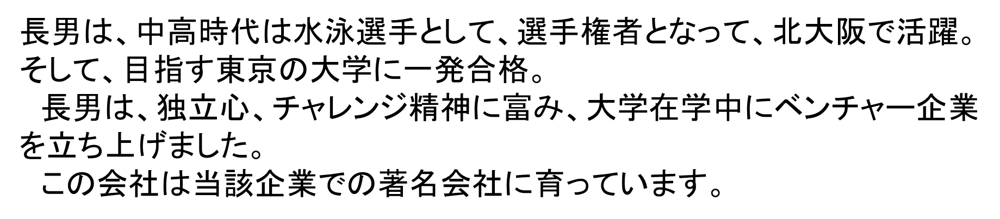
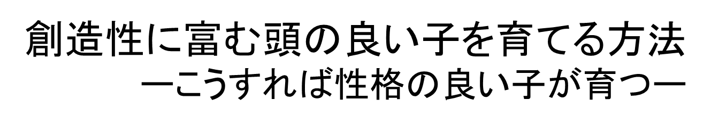

当ホームページについて
“創造性に富む頭の良い子、心身共に健全な子を育てよう”
これは全国全てのお父様お母様共通の願いではないでしょうか。
私の長男は、独立心、チャレンジ精神に富み、大学在学中ベンチャー企業を発足させ、当該企業をこの分野での著名企業に育て上げました。
この長男とは、実は18年間、一緒に机を並べて勉強する仲間でした（本HP第四章参照）。
1才〜幼稚園に始まって、小学校、中学校、高等学校と18年間一緒に仲良く勉強する毎日でした。
最近帰郷したこの長男との会話を、以下に紹介しましょう。
この言葉、私も、嬉しく
私の子育ては、結果としてこうなったのでした。最初から計画的にやったのではありません。一緒に勉強して別に悪くなかったので、というより楽しかったので、そのままズルズルと18年間続けてしまったということだったでしょう。
この子育ての結果は、息子の独立心を劇的に育てました。
“え？ どうして？ 赤ちゃんの頃から18年間も顔を突き合わせて勉強していたら、お父さんべったり、全く独立心は、つかないんじゃないですか”
というお声があるかもしれませんね。もっともです。しかし、全く逆です。息子は、幼児の頃から、“オヤジ”と対等に付き合うために、親子同士という関係とともに、社会人同士という、関係を築きます。
対等の付き合いですから、長続きするわけです。
もしも、従属関係のようなものが、痕跡でも残っていたら、息子は私の前から逸早く、脱出したでしょう。
息子には18年間一緒に勉強したことで、独立心、社会人魂が付いたのです。
これは全国全てのお父様お母様共通の願いではないでしょうか。
私の長男は、独立心、チャレンジ精神に富み、大学在学中ベンチャー企業を発足させ、当該企業をこの分野での著名企業に育て上げました。
この長男とは、実は18年間、一緒に机を並べて勉強する仲間でした（本HP第四章参照）。
1才〜幼稚園に始まって、小学校、中学校、高等学校と18年間一緒に仲良く勉強する毎日でした。
最近帰郷したこの長男との会話を、以下に紹介しましょう。
| 長男： | “こんなふうに18年間、机を並べて勉強したという親子、全国的にも珍しいかもね。ボク達だけだったかもしれないなぁ” |
この言葉、私も、嬉しく
| 私： | “お父さんにとって生涯の誇り、凄く、良かったと思うよ！こんな子育てやったのは、全国でもお父さん達父子だけかもなぁ” |
私の子育ては、結果としてこうなったのでした。最初から計画的にやったのではありません。一緒に勉強して別に悪くなかったので、というより楽しかったので、そのままズルズルと18年間続けてしまったということだったでしょう。
この子育ての結果は、息子の独立心を劇的に育てました。
“え？ どうして？ 赤ちゃんの頃から18年間も顔を突き合わせて勉強していたら、お父さんべったり、全く独立心は、つかないんじゃないですか”
というお声があるかもしれませんね。もっともです。しかし、全く逆です。息子は、幼児の頃から、“オヤジ”と対等に付き合うために、親子同士という関係とともに、社会人同士という、関係を築きます。
対等の付き合いですから、長続きするわけです。
もしも、従属関係のようなものが、痕跡でも残っていたら、息子は私の前から逸早く、脱出したでしょう。
息子には18年間一緒に勉強したことで、独立心、社会人魂が付いたのです。


目次
- 第一章 人って何でしょう
- 第二章 私は友人的父親
- 第三章 すなおな子、感性に富んだ心の子を育てる
- 第四章 自立心を育てる
- 第五章 創造性に富む頭の良い子を育てるために
- コーヒーブレイク バンの子育て物語
- 第六章 赤ちゃんの本当の姿を知ること
- 第七章 子育ての森の中の絶滅危惧種の木
- 第八章 子育てに大切な、とても大切な絆の木
- 小説
最近初孫が生まれ、全くのトリコになっています。ウェブサービスの”家族アルバムみてね”は、子育ての絆を作ってくれる場所です。毎日訪問しています。
私は、今、ウェブサービス『家族アルバムみてね』のトリコです。
初孫が2013年5月、そして二番目の孫が2014年8月に誕生しました。お父さんとお母さんの子育て振り、ただただ頭が下がります。
お父さんが出勤中あるいは出張中は、今の日本の現状ではお母さん一人の子育てが中心になりますよね。
私は、今、ウェブサービス『家族アルバムみてね』のトリコです。
思わず“うーん”とうなっています。孤独な時間の多いお母さんと、勤務中あるいは出張中のお父さん、そして両家の祖父母、兄弟姉妹たちと、ムービー付きのアルバムを視聴しながら、文章での一言会話ができます。赤ちゃんに寄せられる愛の言葉の数々が、一人ぼっちで子育てに励む孤独なお母さんに、大きな大きな絆を与えてくれると私は思います。